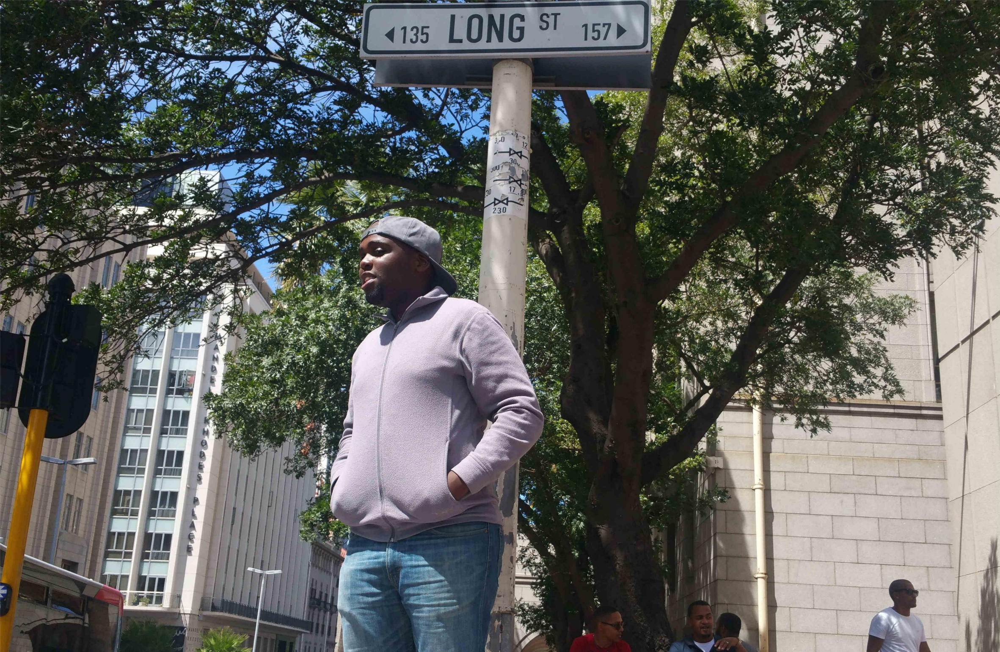

My City
San Francisco
I would really love to visit San Francisco. The city is home to the most talked about Silicon Valley where I believe every geek would want to know how it feels to be in the most technologically advanced region on earth.

A foreign Language I'd like to learn
A forenign language that I would love to learn is French, I always hear people speak in french either on TV or coming across them in person and this has sparked some curiosity in me about the language. Below are some French phrases
| English | French |
|---|---|
| "Live long and prosper" | "Vivre longtemps et prospérer" |
| "Luke, I'm your father" | "Luke, je suis ton père" |
| "May the force be with you" | "Que la force soit avec toi" |
Historic sites
South African Parliament
Interesting facts:
•The South African Houses of Parliament are situated in Cape Town but the seat of government is in Pretoria.
•The original building was built mainly of materials brought from England.
• Parliament owns and keeps up to date a modern reference library now containing over 100,000 books and several hundred publications including official journals and documents.
The Castle of Good Hope
Interesting facts:
•The Castle of Good Hope was built between 1666 and 1679, replacing an earlier mud and timber fort built in 1652 by Commander Jan van Riebeeck
• The entrance was re-positioned because it was so close to the shore.Today, the sea is about one kilometre away
•The castle is is the oldest remaining building in South Africa.
Long Street
Interesting facts:
•Long Street is 3,8 kilometres long – stretches for more than 20 city blocks.
•Long street is open for business 24 hours a day – shop, eat, sleep or play.
•It is the only downtown street in South Africa with an Airstream caravan park